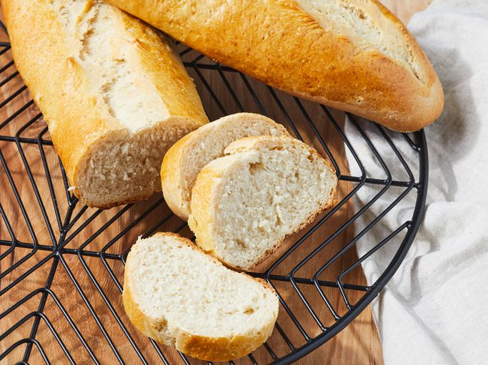

Italian bread

Description
For a loaf of crusty Italian bread, try this bread recipe. The dough is made in a bread machine, then the loaves are baked in the oven.
Ingredients
- 1 ⅓ cups warm water (110 degrees F/45 degrees C)
- 1 ½ teaspoons olive oil
- 4 cups unbleached all-purpose flour
- 1 tablespoon light brown sugar
- 1 ½ teaspoons salt
- 1 (.25 ounce) package active dry yeast
- 2 tablespoons cornmeal
- 1 large egg
- 1 tablespoon water
Steps
- Gather all ingredients.
- Place 1 1/3 cups warm water, olive oil, flour, brown sugar, salt, and yeast into a bread machine in the order listed, or follow the order recommended by your manufacturer if different. Run the Dough cycle, about 90 minutes.
- Sprinkle cornmeal onto a cutting board. Punch down dough, turn out onto a lightly floured surface, and form into two loaves.
- Place loaves, seam-side down, onto the cutting board; cover with a damp cloth and let rise until doubled in volume, about 40 minutes.
- Meanwhile, preheat the oven to 375 degrees F (190 degrees C).
- Beat egg and 1 tablespoon water together in a small bowl; brush over risen loaves.
- Use a sharp knife to quickly cut one long slash down the center of each loaf.
- Gently shake the cutting board to make sure the loaves are not sticking; use a spatula or pastry knife to loosen them if necessary. Slide loaves onto a baking sheet with a quick but careful motion.
- Bake in the preheated oven until loaves are golden brown and sound hollow when tapped on the bottom, 30 to 35 minutes.
Source